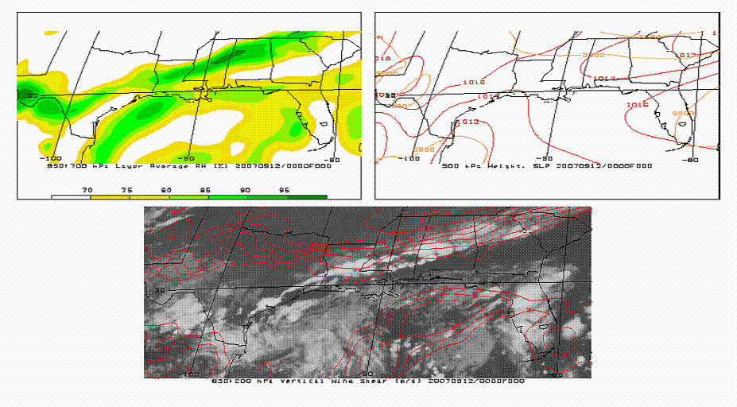

Hurricane Humberto, September 2007
Webpage updated 9 December 2007
The purpose of the webpage is to focus specifically on the rapid intensificaiton of Hurricane Humberto. For additional details about this storm, please reference these agencies:
| GOES-12 Infrared Imagery of Hurricane Humberto Sept 12- Sept 13, approx every 3 hours. |
Abstract
Hurricane Humberto (2007) underwent a rapid intensity change as it developed
from a tropical depression 0900 UTC on 12 September to a small category 1 hurricane
at 0600 UTC on 13 September, making landfall an hour later near High Island,
Texas. In a twenty-one hour time span, Humberto's winds increased from 25 knots
to 80 knots, a higher intensification rate than any other observed tropical
system making landfall. Based on the synoptic-scale environment for Hurricane
Humberto set by Kaplan and DeMaria (2003) of low wind-shear, high relative humidity
values in the lower atmosphere, warm sea surface temperatures, and strong 12-hour
intensity changes, conditions were found to be very favorable for rapid intensification.
Introduction
As hurricane track forecasting accuracy has improved with newer models, forecasting
the intensity of tropical storms has lagged behind. Hurricane Humberto (2007)
was a prime example of this. “No reliable model ever [forecasted Humberto]
to reach hurricane strength,” and despite only reaching Category 1 status
on the Saffir-Simpson scale, it was a record-setting storm (Blake 2007). Its
intensification of 55 knots in a period of 21 hours prior to landfall in southeastern
Texas was unmatched by any tropical system making landfall on record, and one
of four storms (Celia in 1970; Arlene and Flora in 1963) to intensify so rapidly
from a subtropical storm in a 24 hour period (Blake 2007).
At 0600 UTC on 12 September, a cold front spawned a weak surface low in the
Northwestern Gulf of Mexico, becoming Tropical Depression Nine (with 25 knot
winds) at 0900 UTC (Blake 2007). Tropical Storm Humberto was formed at 1200
UTC, and by 0400 UTC on 13 September, it reached Category 1 status. At 0600
UTC, Humberto reached its peak intensity with sustained winds of 80 knots and
a minimum pressure of 985 mb, making landfall an hour later near High Island,
Texas. National Hurricane Center forecaster Franklin commented on this increase
of 55 knots in 21 hours*:
“To put this development in perspective…No tropical cyclone in the historical record has ever reached this intensity at a faster rate near landfall…It would be nice to know…someday…why this happened” (2007).
The purpose of this paper is to examine the role of the synoptic
features that played a factor in Humberto’s intensification, and attempt
to determine the cause. DeMaria and Kaplan (2003) conducted research into Atlantic
tropical cyclones, and found that with small storms such as Humberto, environments
with lower upper-level ascent and divergence, lower-level moisture content,
warm sea-surface temperatures, and weak vertical shear have the largest 48-hour
intensification rates. These values will be analyzed, along with satellite data
and observations.
Background
Tropical cyclones are often intense surface lows, whose energy source is the
oceanic waters. Hurricanes require a set of synoptic conditions to be met in
order to maintain their intensity, or to allow for further intensification.
Warm sea surface temperatures (and warm-water upwelling) allow for the air above
the warm waters to become unstable, further driving convection. This process
has been long studied, such as in the case of Hurricane Katrina (2005), where
anomalously warm Gulf waters where determined to play a significant role in
the intensification of the storm (Kafatos et al. 2006). A low amount of shearing
is needed to create the “ventilation effect”, as coined by Gray
(1968), which is crucial for deep convection and the formation of the eyewall.
Without a significant level of vertical shear, this deep convection allows for
a positive feedback loop between latent heat release (through condensation)
and updrafts near the center of the storm, further strengthening the convection
and eyewall. Because of this, an original source of instability, a high amount
of low-level moisture, and a convectively unstable (to neutral, in some cases)
atmosphere are also needed. Corolis force gives the hurricane rotation, allows
for incoming air to be blown towards the surface low, and also produces an upper-level
high pressure for the diverging air aloft. Interactions between a tropical system
and synoptic features in its environment, such as an upper-level jet increasing
divergence in Hurricane Opal (1995) (Bosart et al. 2000) or the mean synoptic
flow’s interaction with the outflow of a tropical system (Merrill 1988),
have also been studied.
John Kaplan and Mark DeMaria developed the Statistical Hurricane Intensity Prediction Scheme (hereinafter referred as SHIPS) to examine the synoptic characteristics of every Atlantic Basin tropical system (from non-developing depressions to hurricanes; excludes any time in which a storm was over land for more than one hour) between 1989 and 2000, with data in 12-hour increments (2003). From these studies, a surface wind increase of 30 knots over a 24-hour period was proposed as the definition of a rapidly intensifying cyclone (Kaplan and DeMaria, 2003). The 2005 (DeMaria et al.) revision attempted to deal with newer models, satellite data, and included a decay model for hurricanes that were over land for over one hour (but re-emerged over a body of water), as these were exempt from the previous SHIPS study. With that in mind, it is important to note that Hurricane Humberto does not fall under this category. Systems making landfall and dissipating over land without re-emergence over a body of water were not included in the SHIPS study.
Kaplan and Demaria (2003) concluded that the most statistically
important parameters (and threshold values) for calculating rapid intensification
are low wind-shear, high relative humidity values in the lower atmosphere (69.7%
in the 850-700 mb layer), warm sea surface temperatures (28.4°C), the difference
in current intensity and maximum potential intensity (47.6 m/s), and intensity
changes in the sustained surface winds (+4.6 meters per second, or +8.9 knots,
in the previous 12 hours). Because of a time constraint, this paper will not
be able to look at the current and maximum potential intensities, and will analyze
the remaining four parameters.
Research done by Yang et al. (2007) further narrowed down Kaplan and Demaria’s
(2003) list of statistically important parameters to 12-hour intensity change,
vertical wind shear in the 850 to 200 mb layer, and the relative humidity of
the 850 to 700 mb layer. In the original 1989-2000 period, the probability of
a cyclone (meeting the thresholds of these three variables) undergoing rapid
intensification increases 4.1% to 47.6%, compared to 43.5% while also including
the potential of the storm and sea surface temperatures (Yang et al. 2007).
Data
The National Center for Environmental Prediction (NCEP) Global Forecasting System
(GFS) model data provided by Unidata will be used for this case study. Data
was obtained from the Iowa State Environmental Mesonet. Initialized (forecast
hour 0) runs were studied to best depict the synoptic environment. The 4-km
infrared satellite observations come from the Geostationary Operational Environmental
Satellite (GOES) 12 spacecraft, ran by the Office of Satellite Operations (OSO)
at the National Oceanic and Atmospheric Administration (NOAA). High Resolution
Sea Surface Temperature (SST) imagery was provided by the Ocean Remote Sensing
Group in the Johns Hopkins University Applied Physics Laboratory. Additional
SST was provided by NCEP. The “real-track” data of Hurricane Humberto
will be provided from the National Hurricane Center (NHC) Tropical Cyclone Report
(TCR). Commentary from the NHC Forecast Discussions will be used, but numerical
values will not be used from this source, as the TCR times are earlier than
those from the Forecast Discussions and Advisories.
Table 1. Track of Hurricane Humberto (12-14 September 2007). From the Tropical Cyclone Report |
a. North American Analysis
At 0000 UTC on 12 September, a cold front was passing over the Deep South with
a line of thunderstorms (Fig. 1). The upper level jet was over the Great Lakes
(Fig 2.) and did not move towards the South (Figs. 3 and 4). In a previous case
of Hurricane Opal (1995), an upper jet-trough-hurricane interaction was concluded
in providing a major role in the storm’s rapid intensification (Bosart
et al. 2000).
| Fig. 1. Hydrological Prediction Center surface analysis, valid 0000 12 September 2007. | Fig. 2. GOES-12 IR-4 satellite imagery with GFS initialized SLP (blue) and H5 geopotential height (green), valid 0000 UTC 12 September 2007. |
| Fig. 3. GOES-12 IR-4 satellite imagery with GFS initialized SLP (blue) and H5 (green), valid 1200 UTC 12 September 2007. | Fig. 4. GOES-12 IR-4 satellite imagery with GFS initialized SLP (blue) and H5 (green), valid 0000 UTC 13 September 2007. |
| b. Satellite Imagery Humberto had an “unusually well-defined banding and core convective structure” prior to its formation, which the Tropical Hurricane Center researchers suggest as a main source for its rapid intensification (Blake 2007). It was also a small storm, with tropical storm force winds “never exceeding 50 [nautical miles]” based on Dvorak technique intensity estimates (Blake 2007). The coldest cloud tops near the time of maximum storm intensity (0645 UTC) were north of the center of rotation, with temperatures near -76°C (Fig. 6). Cold cloud tops correlate to higher, deeper clouds, which relates to higher precipitation rates, deeper convection, and stronger winds. |
|
| Fig. 6. GOES-12 IR-4 satellite imagery valid 0645 UTC 13 September 2007. |
c. Sea Surface Temperatures
On 12 September, the sea surface temperatures of the Gulf of Mexico were over
29°C (302°K) (Figs. 7 and 8), with a warmer pool of 30°C water along
the extreme southeastern Texas coast through the Florida Keys. This exceeds
the minimum threshold established for rapidly intensifying tropical cyclone
development by Kaplan and Demaria (2003) of 28.4°C by approximately one
to two degrees. A one degree Celsius increase in SST can lead to an increase
in central storm pressure of between 12 and 14 mb (Kafatos et al. 2006). A warm
Gulf eddy, such as the one along the Texas and Louisiana coastline, was a factor
in the rapid intensification of Hurricane Opal (Bosart et al. 2000).
|
|
| Fig. 8. NCEP Sea Surface Temperature data (°K) , valid 12 September 2007. | Fig. 7. Six day composite of Sea Surface Temperatures from POES-12 and POES-14 Advanced Very High Resolution Radiometer (AVHRR), valid 0214 UTC 12 September 2007 |
d. Synoptic-Scale Atmospheric Conditions
The tropical low first developed
(and later intensified) along an area of high frontogenesis off the eastern
Texas and Louisiana coast (Fig. 5) at 0000 UTC on 12 September. At this
time, the vertical wind shear in the 850 to 200 mb layer along the entire
Texas and Louisiana coast and in the northwestern Gulf of Mexico (an area
extending roughly between 25-30°N and 98-90°W) was below 4 m/s
(Fig 9). The low-level moisture in this layer between the 850 and 700
mb heights was over 70% (except immediately inland of the Texas coast),
with a maximum of over 90% near the center of convection (Fig 9). Even
though “almost all thunderstorm activity has dissipated with the
low” at 0300 UTC, likely due to the lack of energy via solar heating,
these conditions brought about a very favorable environment for a rapid
organization of convection in the tropical low between 0600 and 0900 UTC,
enough convection to classify it as Tropical Depression Nine (Blake 2007).
In the next three hours, surface winds increased to 38 knots, allowing
the tropical system to be given a name: Tropical Storm Humberto. |
|
| Fig. 5. GOES-12 IR-4 satellite imagery with GFS initialized frontogenesis (at 1000mb), valid 1200 UTC 12 September 2007. |
|  |
| Fig. 9. (Clockwise from bottom) GFS 850:200 mb vertical wind shear (m/s) and IR-4; 850:700 mb average RH; H5 (orange) and sea level pressure (red). Valid 0000 UTC 12 September 2007. |
| Three hours after being upgraded to tropical storm status (1200 UTC), Humberto’s environment showed an increase in the lower-level moisture in all but the lower right quadrant of the storm, and a decreasing area of low vertical wind shear around the newly named Tropical Storm Humberto (Fig. 10). The greatest layer of low-level moisture (over 95%) was to the north-northeast of Humberto, near the Texas/Louisiana border. This was the direction that the storm took. In only six hours since the low developed (at 0600 UTC), there was an increase in the storm's intensity of 10 knots (5 m/s) (Fig. 10). |
| Fig. 10. (Clockwise from bottom) GFS 850:200 mb vertical wind shear (m/s) and IR-4; 850:700 mb average RH; H5 (orange) and sea level pressure (red). Valid 1200 UTC 12 September 2007 |
| At 0000 UTC on 13 September, the growing Tropical Storm began
to experience vertical shear between 3 and 15 m/s (further inland) over
southeastern Texas and southwestern Louisiana (Fig. 11). This shearing broke
apart the defined center of circulation by the time it was close to making
landfall nearly seven hours later (Fig. 5). However, within 200 km around
the center of circulation, wind shear speeds were below 3 m/s. The intensity
of Humberto increased 20 knots (10 m/s) in the previous twelve hours (Table
1). To the east of the storm center, the low-level moisture was below 70%
at 0000 UTC, which is shown in the infrared imagery as a dry slot forming
seven hours later as Hurricane Humberto was close to making landfall (Fig.
6). The intensity changes, in the twelve hours before landfall (approx.
12/1800 to 13/0600), was an increase of 35 knots (18 m/s) (Table 1). |
| Fig. 11. Clockwise from bottom) GFS 850:200 mb vertical wind shear (m/s) and IR-4; 850:700 mb average RH; H5 (orange) and sea level pressure (red). Valid 0000 UTC 13 September 2007. |
Conclusion
A stalled cold front gave enough convection to form the ninth tropical system
of the 2007 hurricane season early on 12 September. In twenty-seven hours, the
storm made landfall near High Island, Texas, as a Category 1 Hurricane. Hurricane
Humberto intensified on a record-setting scale of 55 knots in 21 hours between
its initial formation and its maximum intensity, just prior to landfall. Humberto
is just one example showing the difficulty in forecasting rapid intensification
of tropical cyclones. The synoptic environmental parameters, deemed most influential
for this meteorological bombing by Kaplan and Demaria (2003), were determined
to be very favorable for the development that occurred. Low vertical wind shear,
ample lower-level moisture, and warm sea surface temperatures allowed for Hurricane
Humberto to develop literally overnight.
Acknowledgments
Special thanks to NCEP and Unidata to providing the Global Forecasting System
data, and to North Carolina State University and Iowa State University for storing
and archiving and the data. The author would also like to thank Caitlin Neidert
for her input and comments in revising this report, and to Dr. Gary Lackmann
for providing insight through the life of this research and performing the necessary
data format conversions.
Blake, E.S. (16 November 2007). Tropical Cyclone Report, Hurricane Humberto, September 12-14, 2007. Miami, FL: National Hurricane Center. AL092007
Bosart, L. F., C. S. Velden, W. E. Bracken, J. Molinari, and P. G. Black (2000), Environmental influences on the rapid intensification of Hurricane Opal (1995) over the Gulf of Mexico, Mon. Wea. Rev., 128, 322–352
DeMaria, M., M. Mainelli, L. K. Shay, J. A. Knaff, and J. Kaplan (2005), Further improvements to the Statistical Hurricane Intensity Prediction Scheme (SHIPS), Weather Forecasting, 20, 531–543
Franklin, cited 2007. Tropical Storm Humberto Discussion Number 6. 13 September 2007.. Miami, FL: National Hurricane Center. AL092007
Gray W. M., 1968: Global view of the origin of tropical disturbances and storms. Mon. Wea. Rev., 96, 669–700.
Kafatos M, Sun DL, Gautam R, Boybeyi Z, Yang R, Cervone G (2006), The role of anomalous warm Gulf waters in the intensification of Hurricane Katrina. Geophys. Res. Lett. 33:L17802
Kaplan, J., and M. DeMaria (2003), Large-scale characteristics of rapidly intensifying tropical cyclones in the North Atlantic basin, Weather Forecasting, 18, 1093-1108.
Merrill, R.T. (1988), Environmental influences on hurricane intensification, J. Atmos. Sci, 45, 1678-1687
Yang, R., J. Tang, and M. Kafatos (2007), Improved associated conditions in
rapid intensifications of tropical cyclones, Geophys. Res. Lett., 34:L20807